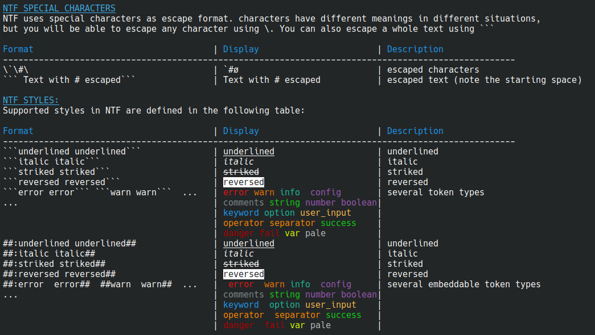

1 Nuts Library
nuts is a package manager that can be embedded in your application as a general purpose library. This library can affords lots of functionalities
1.1 Maven Dependency
to make use of nuts library you need add the dependency .thevpc.nuts#nuts-lib:0.8.6.0 and provide a hint to maven to point to the right repository https://maven.thevpc.net
Configure your pom.xml
<dependencie>
<dependency><groupId>net.thevpc.nuts</groupId><artifactId>nuts-lib</artifactId><version>0.8.6.0</version></dependency>
</dependencie>
<repositories>
<repository><id>thevpc</id><url>https://maven.thevpc.net</url></repository>
</repositories>
1.2 Spring Boot Integration
<dependency>
<groupId>net.thevpc.nuts</groupId>
<artifactId>nuts-spring-boot</artifactId>
<version>0.8.6.0</version>
</dependency>
Implement interface NApplication in your SpringBootApplication top class.
@SpringBootApplication
@Import(NutsSpringBootConfig.class)
public class AppExample implements NApplication {
public static void main(String[] args) {
SpringApplication.run(AppExample.class, args);
}
@Override
public void run() {
NOut.println("Hello ##World##");
}
}
@Component
public class MyBean {
@Autowired NSession session;
@Autowired NWorkspace workspace;
@Autowired NElements elems;
@Autowired NIO nio;
@Autowired NScheduler scheduler;
@Autowired NTerminal term;
@Autowired NPrintStream out;
}
2 Input Output System
nuts Library supports colorful and structured output and simplified input.
Nuts.require();
NOut.println("this is standard (stdout) text writted to the console");
NErr.println("this is shown on the stderr stream");
NTrace.println("this is shown on stdout only if trace mode is enabled");
// here we are showing a structured object, the rendering depends on
// the current session's content-type (xml,json,)
NOut.println(Arrays.asList("Hello"));
nuts support for formatted text is enabled via NTF format.
Nuts.require();
NOut.println("this is standard (stdout) text writted to the console");
NErr.println("this is shown on the stderr stream");
NTrace.println("this is shown on stdout only if trace mode is enabled");
// here we are showing a structured object, the rendering depends on
// the current session's content-type (xml,json,)
NOut.println(Arrays.asList("Hello"));
2.1 Nuts Text Format
Nuts Text Format
nuts comes up with a simple coloring syntax that helps writing better looking portable command line programs. standard output is automatically configured to accept the "Nuts Text Format" (NTF) syntax. Though it remains possible to disable this ability using the --!color standard option (or programmatically, see nuts API documentation). NTF will be translated to the underlying terminal implementation using ANSI escape code on linux/windows terminals if available.
Here after a showcase of available NTF syntax.

Nuts Text Format Specification
<TOKEN> S10: '##########'
<TOKEN> S9 : '#########'
<TOKEN> S8 : '########'
<TOKEN> S7 : '#######'
<TOKEN> S6 : '######'
<TOKEN> S5 : '#####'
<TOKEN> S4 : '####'
<TOKEN> S3 : '###'
<TOKEN> S2 : '##'
<TOKEN> S1 : '##'
<TOKEN> A3 : '\```'
<RULE> S2 ':' KEY ':' ANYTHING S2
<RULE> S2 '{:' WORD ANYTHING S2
<RULE> 13 ANYTHING A3
2.2 NOut Standard output
The NOut class is a simple and powerful utility for writing to the standard output in Nuts. It provides a consistent and extensible way to print text, formatted messages, and structured data.
By default, NOut delegates to the session's configured output stream, defined as an NPrintStream in the current NSession. This stream is customizable, structured, and NTF-aware, making it suitable for both human-readable and machine-readable outputs (JSON, XML, etc.).
Unlike System.out, NOut provides enhanced capabilities:
Intelligent rendering of objects (beyond basic
toString()),Colorized and formatted output via NTF (Nuts Text Format),
- Support for various structured formats (e.g., JSON, YAML, XML, TSON),
- Support for formatted messages with placeholders,
- Table and tree rendering.
Basic Usage
The simplest way to print a message to the console:
Nuts.require();
NOut.println("Hello");
Using NTF
NTF enables you to add rich formatting and colorization:
NOut.println("##Hello colored## ##:_:Hello underlined## ");
NOut.println("##:yellow:Hello in yellow##");
NOut.println("##:warn:this is a warning##");
NOut.println("##:fxFF000:this is a red message##");
Rendering structured output
NOut can render structured output based on the active format in the NSession.
class Customer{String id;String name;}
Customer customer1,customer2,customer3; ...
// configure le current output to render objects as json
// to display the curstomer list as a json array
NSession.of().json();
NOut.println(Arrays.asList(customer1,customer2,customer3));
// you can do the same for yaml,tson,xml,table and tree (as formats)
NSession.of().tree();
NOut.println(Arrays.asList(customer1,customer2,customer3));
Formatted Messages
You can build formatted messages using NMsg, with placeholder support and type-aware formatting:
NOut.println(NMsg.of("this is a %s message that is %s %% beautiful",true,100));
NOut.println(NMsg.of("this is a %s ",NMsg.ofStyledPrimary1("message")));
Working with Tables
To have full control over tabular output, use NMutableTableModel:
NSession session=...;
Object a,b,c,d; ...
NMutableTableModel m = NMutableTableModel.of();
m.newRow().addCells(a,b,c,d);
NOut.println(m);
Working with Trees
To render hierarchical structures, you can implement a custom NTreeModel:
NOut.println(
new NTreeModel() {
@Override
public Object getRoot () {
return "/";
}
@Override
public List<NDependencyTreeNodeAndFormat> getChildren (Object node){
if ("/".equals(node)) {
return Arrays.asList(1,2,3);
}
return Arrays.asList();
}
}
);
Summary
The NOut class provides a robust and extensible mechanism for console output in the Nuts ecosystem. Whether you're logging simple messages, displaying structured data, or building CLI tools, NOut ensures consistent and powerful rendering—fully aligned with Nuts' NTF and output formatting infrastructure.
2.3 NErr Standard Error
NErr is the error-stream counterpart to NOut, providing structured, colored, and format-aware error output in the Nuts ecosystem.
It writes to the standard error stream configured in the current NSession, represented by a customizable NPrintStream. Like NOut, this stream is fully NTF-aware and supports a wide range of formats such as JSON, YAML, TSON, XML, tree, and table.
Key Features
Delegates to
NSession.err()(an NPrintStream)Fully supports NTF (Nuts Text Format) for colored and styled messages
- Supports structured output in multiple formats
Works seamlessly with NMsg, NMutableTableModel, and NTreeModel
- Ideal for logging warnings, errors, diagnostics, and debugging information
Basic Example
Nuts.require();
NErr.println("An error occurred");
Styled Error Messages
You can leverage NTF for expressive and styled output:
NErr.println("##:error:Something went wrong!##");
NErr.println("##:warn:Warning:## Potential issue detected");
NErr.println("##:fxFF0000:Critical failure##");
Structured Error Reporting
Just like with NOut, you can render structured error data using the current session format:
NSession.of().json();
NErr.println(errorList); // errorList = List<ErrorDetail>
NSession.of().table();
NErr.println(errorList);
Formatted Diagnostic Messages
Use NMsg to build dynamic, strongly typed error messages:
NErr.println(NMsg.of("Task %s failed after %d attempts", "SyncJob", 3));
Use Cases
- Displaying runtime errors or exceptions in a user-friendly way
- Emitting machine-readable diagnostics for automation tools
- Rendering hierarchical error trees or tabular summaries
- Debugging output during CLI tool development
Summary
NErr brings all the expressive power of NOut to the standard error stream. Whether you're showing simple warnings or structured diagnostic trees, NErr ensures your error messages are readable, styled, and format-compliant with the Nuts session configuration.
2.4 NMsg
The NMsg class is a powerful utility for building structured, formatted, and styled messages in Nuts. Messages constructed using NMsg can be safely rendered in various output formats (e.g., plain text, NTF, JSON, etc.) and support placeholders, syntax coloring, and semantic styling.
NMsg is fully integrated with NOut and NErr for displaying rich and meaningful CLI output.
Basic Message Construction
C-style Formatting (ofC)
Use ofC to create messages using standard String.format()-style syntax:
NOut.println(NMsg.ofC("Hello %s", "world"));
Placeholders like %s, %d, etc., behave as expected. Useful for simple messages with positional arguments.
Java MessageFormat (ofJ)
Use ofJ for Java-style formatting with {0}, {1} placeholders:
NOut.println(NMsg.ofJ("Hello {0}", "world"));
NOut.println(NMsg.ofJ("Hello {}", "world")); // SLF4J-style
{}placeholders are matched sequentially, like in SLF4J.{0},{1}, etc. allow for specific argument reordering or reuse.
Variable-based Formatting (ofV)
Use ofV to format messages using named variables:
NOut.println(NMsg.ofV("Hello $v", NMaps.of("v", "world")));
NOut.println(NMsg.ofV("Hello ${v}", NMaps.of("v", "world")));
Both $v and ${v} syntaxes are supported.
- $v is simple and concise.
${v} is safer when followed by alphanumeric characters (e.g.,
$val123textvs${val}123text).
Styling Output
In addition to content, NMsg supports visual styling, including colors and font modes.Style by Color Index (Predefined Color Schemes)
Use built-in style presets based on Nuts theme indexes:
NOut.println(NMsg.ofC("Hello %s", NMsg.ofStyledPrimary1("world")));
NOut.println(NMsg.ofC("Hello %s", NMsg.ofStyledSecondary5("world")));
Style by Foreground Color
You can apply arbitrary Java Color objects:
NOut.println(NMsg.ofC("Hello %s", NMsg.ofStyledForegroundColor("world", Color.RED)));
Style by Mode (Blink, Bold, etc.)
Use text styles for visual emphasis:
NOut.println(NMsg.ofC("Hello %s", NMsg.ofStyledBlink("world", Color.RED)));
NOut.println(NMsg.ofC("Hello %s", NMsg.ofStyledBold("world")));
NOut.println(NMsg.ofC("Hello %s", NMsg.ofStyledStriked("world")));
Style by Semantic Token Type
NMsg also supports semantic styling, commonly used in syntax highlighting:
NOut.println(NMsg.ofC("Hello %s", NMsg.ofStyledComments("world")));
NOut.println(NMsg.ofC("Hello %s", NMsg.ofStyledWarn("world")));
ofStyledComments: renders like source code comments.
ofStyledWarn: renders with a warning color/style.
ofStyledString(...)ofStyledKeyword(...)ofStyledBoolean(...)ofStyledError(...)
Summary
The NMsg class allows you to:
- Format messages using multiple conventions (C-style, Java-style, named variables),
- Style message fragments with semantic types or custom colors,
Seamlessly integrate with NOut, NErr, NPrintStream,... for rich CLI or structured outputs.
Whether you're building user-facing tools or internal diagnostics, NMsg ensures your messages are clear, consistent, and visually expressive.
2.5 NIn
nuts Library suppors colorful and structured output
Nuts.require();
NSession session=NSession.of();
NOut.println("Hello");
NOut.println("Hello");
NOut.println(Arrays.asList("Hello"));
NOut.println("Hello");
session.err()....;
session.in()....;
NOut.println("#Hello1# ##Hello2## ##:_:Hello3## ");
NOut.println("");
NOut.println("");
NOut.println("");
NOut.println("");
NErr.println("#Hello1# ##Hello2## ##:_:Hello3## ");
NErr.println("");
NErr.println("");
NErr.println("");
NErr.println("");
NSession session=...;
class Customer{String id;String name;}
Customer customer1,customer2,customer3; ...
//
session.setOutputFormat(NContentType.JSON).out().println(Arrays.asList(customer1,customer2,customer3))
session.setOutputFormat(NContentType.TREE).out().println(Arrays.asList(customer1,customer2,customer3))
session.setOutputFormat(NContentType.PLAIN).out().println(Arrays.asList(customer1,customer2,customer3))
session.setOutputFormat(NContentType.XML).out().println(Arrays.asList(customer1,customer2,customer3))
session.setOutputFormat(NContentType.PROPS).out().println(Arrays.asList(customer1,customer2,customer3))
NOut.println(Arrays.asList(customer1,customer2,customer3))
Working with Tables
NSession session=...;
Object a,b,c,d; ...
NMutableTableModel m = NMutableTableModel.of();
m.newRow().addCells(a,b,c,d);
NOut.println(m);
Working with Trees
NSession session=...;
Object a,b,c,d; ...
NMutableTableModel m = NMutableTableModel.of();
m.newRow().addCells(a,b,c,d);
NOut.printlnf(m);
2.6 NTrace
nuts Library suppors colorful and structured output
Nuts.require();
NSession session=NSession.of();
NOut.println("Hello");
NOut.println("Hello");
NOut.println(Arrays.asList("Hello"));
NOut.println("Hello");
session.err()....;
session.in()....;
NOut.println("#Hello1# ##Hello2## ##:_:Hello3## ");
NOut.println("");
NOut.println("");
NOut.println("");
NOut.println("");
NErr.println("#Hello1# ##Hello2## ##:_:Hello3## ");
NErr.println("");
NErr.println("");
NErr.println("");
NErr.println("");
NSession session=...;
class Customer{String id;String name;}
Customer customer1,customer2,customer3; ...
//
session.setOutputFormat(NContentType.JSON).out().println(Arrays.asList(customer1,customer2,customer3))
session.setOutputFormat(NContentType.TREE).out().println(Arrays.asList(customer1,customer2,customer3))
session.setOutputFormat(NContentType.PLAIN).out().println(Arrays.asList(customer1,customer2,customer3))
session.setOutputFormat(NContentType.XML).out().println(Arrays.asList(customer1,customer2,customer3))
session.setOutputFormat(NContentType.PROPS).out().println(Arrays.asList(customer1,customer2,customer3))
NOut.println(Arrays.asList(customer1,customer2,customer3))
Working with Tables
NSession session=...;
Object a,b,c,d; ...
NMutableTableModel m = NMutableTableModel.of();
m.newRow().addCells(a,b,c,d);
NOut.println(m);
Working with Trees
NSession session=...;
Object a,b,c,d; ...
NMutableTableModel m = NMutableTableModel.of();
m.newRow().addCells(a,b,c,d);
NOut.println(m);
2.7 NAsk
nuts Library supports colorful and structured output
Nuts.require();
NSession session=NSession.of();
NOut.println("Hello");
NOut.println("Hello");
NOut.println(Arrays.asList("Hello"));
NOut.println("Hello");
session.err()....;
session.in()....;
NOut.println("#Hello1# ##Hello2## ##:_:Hello3## ");
NOut.println("");
NOut.println("");
NOut.println("");
NOut.println("");
NErr.println("#Hello1# ##Hello2## ##:_:Hello3## ");
NErr.println("");
NErr.println("");
NErr.println("");
NErr.println("");
NSession session=...;
class Customer{String id;String name;}
Customer customer1,customer2,customer3; ...
//
session.setOutputFormat(NContentType.JSON).out().println(Arrays.asList(customer1,customer2,customer3))
session.setOutputFormat(NContentType.TREE).out().println(Arrays.asList(customer1,customer2,customer3))
session.setOutputFormat(NContentType.PLAIN).out().println(Arrays.asList(customer1,customer2,customer3))
session.setOutputFormat(NContentType.XML).out().println(Arrays.asList(customer1,customer2,customer3))
session.setOutputFormat(NContentType.PROPS).out().println(Arrays.asList(customer1,customer2,customer3))
NOut.println(Arrays.asList(customer1,customer2,customer3))
Working with Tables
NSession session=...;
Object a,b,c,d; ...
NMutableTableModel m = NMutableTableModel.of();
m.newRow().addCells(a,b,c,d);
NOut.println(m);
Working with Trees
NSession session=...;
Object a,b,c,d; ...
NMutableTableModel m = NMutableTableModel.of();
m.newRow().addCells(a,b,c,d);
NOut.printlnf(m);
3 Sessions and Workspaces
3.1 NSession
nuts session holds current configuration and options
To get the current session instance :
NSession session=NSession.of();
NSession session=NSession.of();
session=session.copy().setConfirm(NConfirmationMode.ASK);
session.runWith(()->{
// here run with new options
});
// share allows NSession/NWorkspace to be accessible globally as a singleton
Nuts.require();
// then you can get the current session anywhere in your code
NSession session=NSession.of();
session.setConfirm(NConfirmationMode.ASK);
session.setOutputFormat(NContentType.XML);
NOut.println("Hello");
NOut.println("Hello");
NOut.println(Arrays.asList("Hello"));
NOut.println("Hello %s","world");
NOut.println(NMsg.ofC("Hello %s","world"));
NOut.println(NMsg.ofJ("Hello {0}","world"));
NOut.println(NMsg.ofV("Hello $v",NMaps.of("v","world"));
4 Files and Paths
4.1 NPath
nuts introduces a concept very similar to java's URL but with better extension builtin mechanisms and helper methods : NPath
supported formats/protocols are:file format
/path/to/to/resourceorc:\path\to\resourcefile URL
file:/path/to/to/resourceorfile:c:/path/to/resourcehttp/https URLs (or any other Java supported URL)
//some-urlor//some-urlclasspath
classpath:/path/to/to/resource(you must provide the used classpath upon creation)resource Path
resource://groupId1:artifactId1#version1;groupId2:artifactId2#version2/path/to/resourceor//(groupId1:artifactId1#version1;groupId2:artifactId2#version2)/path/to/resourcein that case the resource is looked up in any of the artifact classpaths (including dependencies)
4.2 IO
nuts Library allows multiple variants of string interpolation
NCp
NCp.of()
.from("http://my-server.com/file.pdf")
.to("/home/my-file")
.setProgressMonitor(true)
.setValidator((in)->checkSHA1Hash(in))
.run();
NPs ps=NPs.of()
if(ps.isSupportedKillProcess()){
ps.killProcess("1234");
}
NCompress/NUncompress
NCompress aa = NCompress.of()
.setTarget(options.outZip);
for (NPath file : options.files) {
aa.addSource(file);
}
aa.run();
NUncompress.of()
.from(is)
.visit(new NUncompressVisitor() {
@Override
public boolean visitFolder(String path) {
return true;
}
@Override
public boolean visitFile(String path, InputStream inputStream) {
if ("META-INF/MANIFEST.MF".equals(path)) {
...
} else) {
...
}
return true;
}
}).run();
NDigest
String digest=NDigest.of().setSource(x.getPath().getBytes()).computeString();
}).run();
5 Nuts Utilities
5.1 NCmdLine
nuts provides a useful commandline parser NCmdLine It supports command lines in the following form :
my-app -o=y --name='some name' -ex --extra value arg1 arg2
where the command here supports short and long options (short ones are -o, -e and -x, where -e and -x are combined as -ex), and of course non options or regular arguments (here arg1 and arg2). Note also that value could be interpreted as a value for --extra (or not; depending on how you configure your parser, for this option).
Short vs Long Options
Options can be long options (starts with double hyphen) or short options (start with a single hyphen). Many arguments support both forms. For instance "-w" and "--workspace" are the supported forms to define the workspace location in the nuts command.Valued / Non-valued Options
Options can also support a value of type string or boolean. The value can be suffixed to the option while separated with '=' sign or immediately after the option. As an example, all are equivalent. Of course, not all options can support values, an not all options neither support the suffixed and/or the non-suffixed mode. Please relate to the documentation of nuts or the application you are using to know how to use the options.Boolean Options
Particularly, when the value is a boolean, the value do not need to be defined. As a result "--install-companions" and "--install-companions=true" are equivalent. However "--install-companions true" is not (because the option is of type boolean) and "true" will be parsed as a NonOption.To define a false value to the boolean option we can either suffix with =false or prefix with ! or ~ sign. Hence, --install-companions=false, --!install-companions and --~install-companions are all equivalent.
Note also that ~ is equivalent to ! because in bash shells (and some other shells) ! will be interpreted as expansion operator.
Combo Simple Options
Simple options can be grouped in a single word. "-ls" is equivalent to "-l -s". So one should be careful. One exception though. For portability reasons, "-version" is considered a single short option.Ignoring Options, Comments
Options starting with "-//" and "--//" are simply ignored by the command line parser.Creating NCmdLine
Command line can either be created manually or parsed. You can create a command by providing the arguments:
NCmdLine c1= NCmdLine.ofArgs("ls","-l");
nuts supports multiple commandline dialects (bash/linux, bat/Windows,...)
NCmdLine c1= NCmdLine.of("ls -l", NShellFamily.BASH);
NCmdLine c1= NCmdLine.parse("ls -l");
You would want to be portable across all operating systems, you can use ofDefault method.
NCmdLine c1= NCmdLine.ofDefault("ls -l");
Configuring NCmdLine
setCommandName(true|false)
This method help defining the name of the command supporting this command line. This is helpful when generating errors/exception so that the message is relevant for instance, you would call ("ls"), so that all errors are in the form of unexpected argument --how
setExpandSimpleOptions(true|false)
This method can change the default behavior of NCmdLine (defaulted to true). When true, options in the form -ex are expanded to -e -x.
registerSpecialSimpleOption(argName)
This method limits setExpandSimpleOptions application so that for some options that start with - (simple options), they are not expanded. A useful example is '-version'. You wouldn't want it to be interpreted as '-v -e -r -s -i -o -n', would you?
setExpandArgumentsFile(true|false)
This method can change the default behavior of NCmdLine (defaulted to true). When false, options in the form @path/to/arg/file are interpreted as non options. When true (which is the default), the parser will load arguments from the given file/location.
Using CommandLine
NCmdLine has a versatile parsing API. One way to use it is as follows :
NCmdLine cmdLine = yourCommandLine();
boolean boolOption = false;
String stringOption = null;
List<String> others = new ArrayList<>();
NArg a;
while (cmdLine.hasNext()) {
a = cmdLine.peek().get();
if (a.isOption()) {
switch (a.key()) {
case "-o":
case "--option": {
a = cmdLine.nextFlag().get();
if (a.isNonCommented()) {
boolOption = a.getBooleanValue().get();
}
break;
}
case "-n":
case "--name": {
a = cmdLine.nextEntry().get();
if (a.isNonCommented()) {
stringOption = a.getStringValue().get();
}
break;
}
default: {
NSession.of().configureLast(cmdLine);
}
}
} else {
others. add(cmdLine. next().get().toString());
}
}
NOut.println(NMsg. ofC("boolOption=%s stringOption=%s others=%s", boolOption, stringOption, others));
Using CommandLine, The recommended way...
NCmdLine cmdLine = NApp.of().getCmdLine();
NBooleanRef boolOption = NRef.of(false);
NRef<String> stringOption = NRef.ofNull();
List<String> others = new ArrayList<>();
cmdLine.forEachPeek ((a,l,c)-> {
if (a.isOption()) {
switch (a.key()) {
case "-o":
case "--option": {
cmdLine.withNextFlag((v, e, s)->boolOption.set(v));
return true;
}
case "-n":
case "--name": {
cmdLine.withNextEntry((v, e, s)->stringOption.set(v));
return true;
}
}
return false;
} else {
nonOptions.add(l.next().get().toString());
return true;
}
});
5.2 NOptional
nuts introduces a concept very similar to java's Optional but with better extension builtin mechanisms and helper methods : NOptional
NOptional is extensively used in Nuts Package Manager itself.
Non Null Assertion
Java has a builtin null Check mechanism but it does not enable customized messages or exceptions. Optional are described as per Java's (c) Documentation "A container object which may or may not contain a non-null value". NOptional is more of an Object Wrapper than addes several useful null related operators like '??' '?.' and '!' in typescript.
if(stringWord==null){
throw new IllegalArgumentException("missing user name");
}
stringWord.toUpperCase()
// expected : stringWord!..toUpperCase()
NOptional.ofNamed(stringWord,"user name").get().toUpperCase();
// will throw an IllegalArgumentException|NIllegalArgumentException with "missing user name" message;
Nullish Coalescing
Number roadNumber=road.number!=null?road.number:10;
// expected : var roadNumber=road.number??10;
Number roadNumber=NOptional.of(road.number).orElse(10);
Optional Chaining
Number roadNumber=(app!=null && app.person!=null && app.person.road!=null)? app.person.address.road.number:null;
// expected var roadNumber=app?.person?.address?.road?.number;
Number roadNumber=NOptional.of(app).then(v->v.person).then(v->v.road).then(v->v.number).orNull();
Combining Optional Chaining
Address address=(app!=null && app.person!=null)?app.person.address:null;
if(address==null){
throw new IllegalArgumentException("missing address");
}
Number roadNumber=(address!=null
&& address.road!=null)
? address.road.number:0;
// expected : var roadNumber=app?.person?.address!.road?.number??0;
Number roadNumber=NOptional.of(app).then(v->v.person).then(v->v.address).get().then(v->v.road).then(v->v.number).orElse(0);
5.3 NStream
nuts introduces a concept very similar to java's Stream but with better extension builtin mechanisms and helper methods : NStream
NStream is actually a wrapper to java's Stream, Iterator and Iterable and you can create a stream using .of(...) methods.
NStream is extensively used in Search Command.
6 Nuts Application Framework
nuts is a package manager that can be embedded in your application and hence present a solid Application Framework and tooling to make the applicable more robust and more portable.
nuts as a Framework :
- Adds support for Application Lifecycle (Hooks for install, update, uninstall)
- Adds support for auto update
- Adds support for isolated input/output (via session in/out)
- Adds support for Desktop Integration
- Adds Shortcuts, Menus
- Adds Aliases
- Adds support for Base Directory API
- API to manage per application directories (log, cache, config,...)
- Adds support for Base Commandline API
- standardized commandline options
- inherit common options (--table, --json, ...)
6.1 Nuts Application Framework
Using Nuts Application Framework (NAF)
Using nuts is transparent as we have seen so far. It's transparent both at build time and runtime. However, nuts can provide our application a set of unique helpful features, such as install and uninstall hooks, comprehensive command line support and so on.
To create your first NAF application, you will need to add nuts as a dependency and change your pom.xml as follows:
<?xml version="1.0" encoding="UTF-8"?>
<project xmlns="http://maven.apache.org/POM/4.0.0" xmlns:xsi="http://www.w3.org/2001/XMLSchema-instance"
xsi:schemaLocation="http://maven.apache.org/POM/4.0.0 http://maven.apache.org/xsd/maven-4.0.0.xsd">
<modelVersion>4.0.0</modelVersion>
<groupId>com.mycompany.app</groupId>
<artifactId>my-app</artifactId>
<version>1.0-SNAPSHOT</version>
<packaging>jar</packaging>
<dependencies>
<dependency>
<groupId>net.thevpc.nuts</groupId>
<artifactId>nuts-lib</artifactId>
<version>0.8.6.0</version>
</dependency>
<dependency>
<groupId>jexcelapi</groupId>
<artifactId>jxl</artifactId>
<version>2.4.2</version>
</dependency>
</dependencies>
<properties>
<project.build.sourceEncoding>UTF-8</project.build.sourceEncoding>
<maven.compiler.source>1.8</maven.compiler.source>
<maven.compiler.target>1.8</maven.compiler.target>
<nuts.application>true</nuts.application>
</properties>
</project>
Please take note that we have added a property nuts.application=true. Actually this is not mandatory, but this will help nuts package manager detect that this application uses NAF before downloading its jar (the information will be available in the .xml descriptor on the remote repository).
package com.mycompany.app;
import java.io.File;
import jxl.Workbook;
import jxl.write.WritableWorkbook;
public class App implements NApplication {
public static void main(String[] args) {
// just create an instance and call runAndExit in the main method
// this method ensures that exist code is well propagated
// from exceptions to caller processes
new App().run(NAppRunOptions.ofExit(args));
}
@Override
public void run() {
NCmdLine cmd = NApp.of().getCmdLine();
File file = new File("file.xls");
while (cmd.hasNext()) {
switch (cmd.getKey().getString()) {
case "--file": {
NArg a = cmd.nextEntry().get();
file = new File(a.getStringValue());
break;
}
case "--fill": {
// process other options here ...
break;
}
default: {
s.configureLast(cmd);
}
}
}
try {
WritableWorkbook w = Workbook.createWorkbook(file);
s.out().printf("Workbook just created at %s%n", file);
} catch (Exception ex) {
ex.printStackTrace(s.err());
}
}
@Override // this method is not required, implement when needed
public void onInstallApplication() {
NOut.println(NMsg.ofC("we are installing My Application : %s%n", NApp.of().getId()));
}
@Override // this method is not required, implement when needed
public void onUninstallApplication(NSession s) {
NOut.println(NMsg.ofC("we are uninstalling My Application : %s%n", NApp.of().getId()));
}
@Override // this method is not required, implement when needed
public void onUpdateApplication(NSession s) {
NOut.println(NMsg.ofC("we are updating My Application : %s%n", NApp.of().getId()));
}
}
nuts -y install com.mycompany.app:my-app
nuts -y uninstall com.mycompany.app:my-app
6.2 File system
is largely inspired by XDG Base Directory Specification and hence defines several store locations for each file type. Such organization of folders is called Layout and is dependent on the current operating system, the layout strategy and any custom configuration.
Store Locations
Supported Store Locations are :nuts File System defines the following folders :
config : defines the base directory relative to which application specific configuration files should be stored.
apps : defines the base directory relative to which application executable binaries should be stored
lib : defines the base directory relative to which application non executable binaries should be stored
var : defines the base directory relative to which application specific data files (other than config) should be stored
log : defines the base directory relative to which application specific log and trace files should be stored
temp : defines the base directory relative to which application specific temporary files should be stored
cache : defines the base directory relative to which application non-essential data and binary files should be stored to optimize bandwidth or performance
run : defines the base directory relative to which application-specific non-essential runtime files and other file objects (such as sockets, named pipes, ...) should be stored
nuts defines such distinct folders (named Store Locations) for storing different types of application data according to your operating system.
On Windows Systems the default locations are :- apps : "$HOME/AppData/Roaming/nuts/apps"
- lib : "$HOME/AppData/Roaming/nuts/lib"
- config : "$HOME/AppData/Roaming/nuts/config"
- var : "$HOME/AppData/Roaming/nuts/var"
- log : "$HOME/AppData/Roaming/nuts/log"
- temp : "$HOME/AppData/Local/nuts/temp"
- cache : "$HOME/AppData/Local/nuts/cache"
- run : "$HOME/AppData/Local/nuts/run"
- config : "$HOME/.config/nuts"
- apps : "$HOME/.local/share/nuts/apps"
- lib : "$HOME/.local/share/nuts/lib"
- var : "$HOME/.local/share/nuts/var"
- log : "$HOME/.local/log/nuts"
- cache : "$HOME/.cache/nuts"
- temp : "$java.io.tmpdir/$username/nuts"
- run : "/run/user/$USER_ID/nuts"
home/me/.config/nuts/default-workspace/config/id/net/vpc/app/netbeans-launcher/1.2.4/
C:/Users/me/AppData/Roaming/nuts/log/nuts/personal/config/id/net/vpc/app/netbeans-launcher/1.2.4/app.log
Store Location Strategies
When you install any application using the nuts command a set of specific folders for the presented Store Locations are created. For that, two strategies exist : Exploded strategy (the default) and Standalone strategy.
In Exploded strategy nuts defines top level folders (in linux ~/.config for config Store Location etc), and then creates withing each top level Store Location a sub folder for the given application (or application version to be more specific). This helps putting all your config files in a SSD partition for instance and make nuts run faster. However if you are interested in the backup or roaming of your workspace, this may be not the best approach.
The Standalone strategy is indeed provided mainly for Roaming workspaces that can be shared, copied, moved to other locations. A single root folder will contain all of the Store Locations.
As an example, in "Standalone Strategy", the configuration folder for the artifact net.thevpc.app:netbeans-launcher#1.2.4 in the default workspace in a Linux environment is
home/me/.config/nuts/default-workspace/config/id/net/vpc/app/netbeans-launcher/1.2.4/
/home/me/.config/nuts/default-workspace/log/id/net/vpc/app/netbeans-launcher/1.2.4/
/home/me/.config/nuts/default-workspace
whereas in the Exploded strategy the Store Location are "exploded" into multiple root folders.
Custom Store Locations
Of course, you are able to configure separately each Store Location to meet your needs.Selecting strategies
The following command will create an exploded workspace
nuts -w my-workspace --exploded
nuts -w my-workspace --standalone
Finer Customization
The following command will create an exploded workspace and moves all config files to the SSD partition folder /myssd/myconfig
nuts -w my-workspace --system-conf-home=/myssd/myconfig
nuts help
6.3 Your first Application using nuts
Running your application with Nuts
Lets take, step by step, an example of an application that you will run using nuts package manager
First we can create the project using your favourite IDE or using simply mvn command
mvn archetype:generate -DgroupId=com.mycompany.app -DartifactId=my-app -DarchetypeArtifactId=maven-archetype-simple -DarchetypeVersion=1.4 -DinteractiveMode=false
~/> tree
.
└── my-app
├── pom.xml
└── src
├── main
│ └── java
│ └── com
│ └── mycompany
│ └── app
│ └── App.java
└── test
└── java
└── com
└── mycompany
└── app
└── AppTest.java
Now we will add some dependencies to the project. Let's add jexcelapi:jxl#2.4.2 and update pom.xml consequently.
<?xml version="1.0" encoding="UTF-8"?>
<project xmlns="http://maven.apache.org/POM/4.0.0" xmlns:xsi="http://www.w3.org/2001/XMLSchema-instance"
xsi:schemaLocation="http://maven.apache.org/POM/4.0.0 http://maven.apache.org/xsd/maven-4.0.0.xsd">
<modelVersion>4.0.0</modelVersion>
<groupId>com.mycompany.app</groupId>
<artifactId>my-app</artifactId>
<version>1.0-SNAPSHOT</version>
<packaging>jar</packaging>
<dependencies>
<dependency>
<groupId>jexcelapi</groupId>
<artifactId>jxl</artifactId>
<version>2.4.2</version>
</dependency>
</dependencies>
<properties>
<project.build.sourceEncoding>UTF-8</project.build.sourceEncoding>
<maven.compiler.source>1.8</maven.compiler.source>
<maven.compiler.target>1.8</maven.compiler.target>
</properties>
</project>
package com.mycompany.app;
import java.io.File;
import jxl.Workbook;
import jxl.write.WritableWorkbook;
public class App {
public static void main(String[] args) {
try {
WritableWorkbook w = Workbook.createWorkbook(new File("any-file.xls"));
System.out.println("Workbook just created");
} catch (Exception ex) {
ex.printStackTrace();
}
}
}
mvn clean install
Of course, we won't be able to run the application yet. Would we? For this app to work there are several ways, all of them are complicated and require modifying the pom.xml and even modifying the output jar. we can for instance generate an output lib directory and update the META-INF file using maven-dependency-plugin. (see https://maven.apache.org/plugins/maven-shade-plugin ; https://www.baeldung.com/executable-jar-with-maven). We could also use maven-assembly-plugin to include the dependencies into the jar itself ('what the fat' jar!). Another alternative is to use an uglier solution with maven-shade-plugin and blend libraries into the main jar. In all cases we need as well to configure maven-jar-plugin to specify the main class file.
I am not exposing all solutions here. You can read this article for more details (https://www.baeldung.com/executable-jar-with-maven) but trust me, they all stink.Instead of that we will use nuts. In that case, actually we are already done, the app is already OK! We do not need to specify the main class neither are we required to bundle jxl and its dependencies. We only need to run the app. That's it.
Basically, you can install the application using its identifier com.mycompany.app:my-app. The latest version will be resolved.
nuts install com.mycompany.app:my-app
nuts my-app
nuts -y com my-app-1.0.0-SNAPSHOT.jar
As we can see, nuts provides the simplest and the most elegant way to deploy your application.
One question though. what happens if we define multiple main methods (in multiple public classes). It's handled as well by nuts seamlessly. It just asks, at runtime, for the appropriate class to run.
Using Nuts Application Framework
Using nuts is transparent as we have seen so far. It's transparent both at build time and runtime. However, nuts can provide our application a set of unique helpful features, such as install and uninstall hooks, comprehensive command line support and so on.
To create your first NAF application, you will need to add nuts as a dependency and change your pom.xml as follows:
<?xml version="1.0" encoding="UTF-8"?>
<project xmlns="http://maven.apache.org/POM/4.0.0" xmlns:xsi="http://www.w3.org/2001/XMLSchema-instance"
xsi:schemaLocation="http://maven.apache.org/POM/4.0.0 http://maven.apache.org/xsd/maven-4.0.0.xsd">
<modelVersion>4.0.0</modelVersion>
<groupId>com.mycompany.app</groupId>
<artifactId>my-app</artifactId>
<version>1.0-SNAPSHOT</version>
<packaging>jar</packaging>
<dependencies>
<dependency>
<groupId>net.thevpc.nuts</groupId>
<artifactId>nuts-lib</artifactId>
<version>0.8.6.0</version>
</dependency>
<dependency>
<groupId>jexcelapi</groupId>
<artifactId>jxl</artifactId>
<version>2.4.2</version>
</dependency>
</dependencies>
<properties>
<project.build.sourceEncoding>UTF-8</project.build.sourceEncoding>
<maven.compiler.source>1.8</maven.compiler.source>
<maven.compiler.target>1.8</maven.compiler.target>
<nuts.application>true</nuts.application>
</properties>
</project>
Please take note that we have added a property nuts.application=true. Actually this is not mandatory, but this will help nuts package manager detect that this application uses NAF before downloading its jar (the information will be available in the .xml descriptor on the remote repository).
package com.mycompany.app;
import java.io.File;
import jxl.Workbook;
import jxl.write.WritableWorkbook;
public class App implements NApplication {
public static void main(String[] args) {
// just create an instance and call runAndExit in the main method
// this method ensures that exist code is well propagated
// from exceptions to caller processes
new App().run(NAppRunOptions.ofExit(args));
}
@Override
public void run() {
NCmdLine cmd = NApp.of().getCmdLine();
File file = new File("file.xls");
while (cmd.hasNext()) {
switch (cmd.getKey().getString()) {
case "--file": {
NArg a = cmd.nextEntry().get();
file = new File(a.getStringValue());
break;
}
case "--fill": {
// process other options here ...
break;
}
default: {
s.configureLast(cmd);
}
}
}
try {
WritableWorkbook w = Workbook.createWorkbook(file);
s.out().printf("Workbook just created at %s%n", file);
} catch (Exception ex) {
ex.printStackTrace(s.err());
}
}
@Override // this method is not required, implement when needed
public void onInstallApplication() {
NOut.println(NMsg.ofC("we are installing My Application : %s%n", NApp.of().getId()));
}
@Override // this method is not required, implement when needed
public void onUninstallApplication(NSession s) {
NOut.println(NMsg.ofC("we are uninstalling My Application : %s%n", NApp.of().getId()));
}
@Override // this method is not required, implement when needed
public void onUpdateApplication(NSession s) {
NOut.println(NMsg.ofC("we are updating My Application : %s%n", NApp.of().getId()));
}
}
nuts -y install com.mycompany.app:my-app
nuts -y uninstall com.mycompany.app:my-app
6.4 Command Line Arguments
nuts supports a specific format for command line arguments. This format is the format supported in nuts Application Framework (NAF) and as such all NAF applications support the same command line arguments format. Arguments in nuts can be options or non options. Options always start with hyphen (-).
Nuts Application Framework CommandLine
Application Command line can be retrieved via NApp instance:
NCmdLine c1= NApp.of().getCmdine();
Exec / Autocomplete modes
NCmdLine c= NApp.of().getCmdine();
if(c.isExecMode()){
///
}
Default Options
All Applications inherit some default and useful options (see Nuts Command Line options for details). These options affect current session behaviour.- -T
- --output-format-option
- -O
- --output-format
- --tson
- --yaml
- --json
- --props
- --plain
- --table
- --tree
- --xml
- -y
- --yes
- --ask
- -n
- --no
- --error
- --trace
- --solver
- --progress
- --debug
- -f
- --fetch
- -a
- --anywhere
- -F
- --offline
- --online
- --remote
- -c
- --color
- -B
- --bot
- --dry
- -D
- --out-line-prefix
- --err-line-prefix
- --line-prefix
*
*
*
*
*
*
*
*
*
*
*
*
*
*
*
*
*
*
*
*
*
*
*
*
*
*
*
*
*
*
*
*
*
*
*
*
*
*
*
*
*
*
*
*
*
*
*
*
*
* --version
6.5 Nuts Descriptor Integration
Nuts Descriptor Integration
- Seamless integration
- Maven Solver
Nuts and Maven
nuts.executable=<true|false>: when true the artifact is an executable (contains main class)nuts.application=<true|false>: when true the artifact is an executable application (implements NutsApplication)nuts.gui=<true|false>: when true the requires a gui environment to executenuts.term=<true|false>: when true the artifact is a command line executablenuts.icons=<icon-path-string-array>: an array (separated with ',' or new lines) of icon paths (url in the NPath format)nuts.genericName=<genericNameString>: a generic name for the application like 'Text Editor'nuts.categories=<categories-string-array>: an array (separated with ',' or new lines) of categories. the categories should be compatible with Free Desktop Menu specification (https://specifications.freedesktop.org/menu-spec/menu-spec-1.0.html)
nuts.<os>-os-dependencies: list (':',';' or line separated) of short ids of dependencies that shall be appended to classpath only if running on the given os (see NutsOsFamily). This is a ways more simple than using the builtin ' profile' concept of Maven (which is of course supported as well)nuts.<arch>-arch-dependencies: list (':',';' or line separated) of short ids of dependencies that shall be appended to classpath only if running on the given hardware architecture (see NutsArchFamily). This is a ways more simple than using the builtin 'profile' concept of Maven (which is of course supported as well)nuts.<os>-os-<arch>-arch-dependencies: list (':',';' or line separated) of short ids of dependencies that shall be appended to classpath only if running on the given hardware architecture and os family
<?xml version="1.0" encoding="UTF-8"?>
<project xmlns:xsi="http://www.w3.org/2001/XMLSchema-instance" xmlns="http://maven.apache.org/POM/4.0.0"
xsi:schemaLocation="http://maven.apache.org/POM/4.0.0 http://maven.apache.org/xsd/maven-4.0.0.xsd">
<modelVersion>4.0.0</modelVersion>
<groupId>your-group</groupId>
<artifactId>your-project</artifactId>
<version>1.2.3</version>
<packaging>jar</packaging>
<properties>
<!--properties having special meanings in Nuts-->
<maven.compiler.target>1.8</maven.compiler.target>
<!--properties specific to nuts for developers extending nuts-->
<nuts.runtime>true</nuts.runtime> <!--if you implement a whole new runtime-->
<nuts.extension>true</nuts.extension> <!--if you implement an extension-->
<!--other properties specific to nuts-->
<nuts.genericName>A Generic Name</nuts.genericName>
<nuts.executable>true</nuts.executable>
<nuts.application>true</nuts.application>
<nuts.gui>true</nuts.gui>
<nuts.term>true</nuts.term>
<nuts.categories>
/Settings/YourCategory
</nuts.categories>
<nuts.icons>
classpath://net/yourpackage/yourapp/icon.svg
classpath://net/yourpackage/yourapp/icon.png
classpath://net/yourpackage/yourapp/icon.ico
</nuts.icons>
<nuts.windows-os-dependencies>
org.fusesource.jansi:jansi
com.github.vatbub:mslinks
</nuts.windows-os-dependencies>
<nuts.windows-os-x86_32-arch-dependencies>
org.fusesource.jansi:jansi
com.github.vatbub:mslinks
</nuts.windows-os-x86_32-arch-dependencies>
</properties>
<dependencies>
</dependencies>
</project>
Nuts and Java MANIFEST.MF
Manifest-Version: 1.0
Archiver-Version: Plexus Archiver
Built-By: vpc
Created-By: Apache Maven 3.8.1
Build-Jdk: 1.8.0_302
Nuts-Id: groupid:artifactid#version
Nuts-Dependencies: org.fusesource.jansi:jansi#1.2?os=windows;com.github.vatbub:mslinks#1.3?os=windows
Nuts-Name: Your App Name
Nuts-Generic-Name: Your App Generic Name
Nuts-Description: Your App Description
Nuts-Categories: /Settings/YourCategory;/Settings/YourCategory2
Nuts-Icons: classpath://net/yourpackage/yourapp/icon.svg;classpath://net/yourpackage/yourapp/icon.png
Nuts-Property-YourProp: YourValue
Comment: if the Nuts-Id could not be found, best effort will be used from the following
Automatic-Module-Name: yourgroupid.yourartifactid.YourClass
Main-Class: groupid.artifactid.YourClass
Implementation-Version: 1.2.3
Nuts and Java 9 (jdeps)
Nuts supports Automatic-Module-Name.
Automatic-Module-Name: yourgroupid.yourartifactid.YourClass